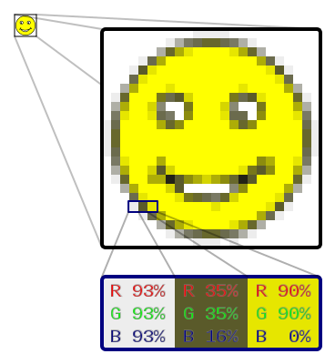

Растрова графіка
Основним елементом растрового зображення є точка (крапка). Якщо зображення екранне, то ця точка називається пікселем. Залежно від того, на яку графічну розподільчу здатність екрану налаштована операційна система комп'ютера, на екрані можуть розміщуватись зображення, які мають 640х480, 800х600, 1024х768 і більше пікселів.
З розміром зображення безпосередньо пов'язана його роздільна здатність. Цей параметр вимірюється в точках на дюйм (англ. dots per inch, dpi). У монітора з діагоналлю 15 дюймів розмір зображення на екрані становить приблизно 28х21 см. Знаючи, що в одному дюймі 25,4 мм, можна розрахувати, що при роботі монітора в режимі 800х600 пікселів роздільна здатність екранного зображення 72 dpi.

При друці розподільча здатність має бути набагато вище. Поліграфічний друк повноколірного зображення вимагає роздільної здатності 200—300 dpi. Стандартний фотознімок 10х15 см повинен мати приблизно 1000х1500 пікселів. Таке зображення буде мати 1,5 млн точок, а якщо зображення кольорове і на координування кожної точки використано три байти, то звичайній фотографії відповідатиме масив даних розміром понад 4 Мбайт.
Переваги:
- Растрова графіка дозволяє створити практично будь-яке зображення, незалежно від складності, на відміну від векторної, де неможливо точно передати ефект переходу від одного кольору до іншого без втрат у розмірі файлу;
- Поширеність — растрова графіка використовується зараз практично скрізь: від маленьких значків до плакатів;
- Висока швидкість обробки складних зображень, якщо не потрібно масштабування;
- Растрове представлення зображення природне для більшості пристроїв введення-виведення графічної інформації (за винятком векторних пристроїв виводу), таких як монітори, матричні та струменеві принтери, цифрові фотоапарати, сканери, а також стільникові телефони;
- Простота автоматизованого вводу (оцифрування) зображень, фотографій, слайдів, малюнків за допомогою сканерів, відеокамер, цифрових фотоапаратів;
- Фотореалістичність. Можна отримувати різні ефекти, такі як туман, розмитість, тонко регулювати кольори, створювати глибину предметів.
Недоліки:
- Великий розмір файлів у простих зображень. Тому, що розмір файлу є пропорційним до площі зображення, роздільності і типу зображення, і, переважно, при хорошій якості є великим;
- Неможливість ідеального масштабування. Растрове зображення має визначену роздільність і глибину представлення кольорів. Ці параметри можна змінювати лише у визначених межах і, як правило, із втратою якості;
- Неможливість виведення на друк на векторний графічний пристрій;
- Складність управління окремими фрагментами зображення.
Через ці недоліки для зберігання простих малюнків рекомендують замість, навіть стиснутої, растрової графіки використовувати векторну графіку.